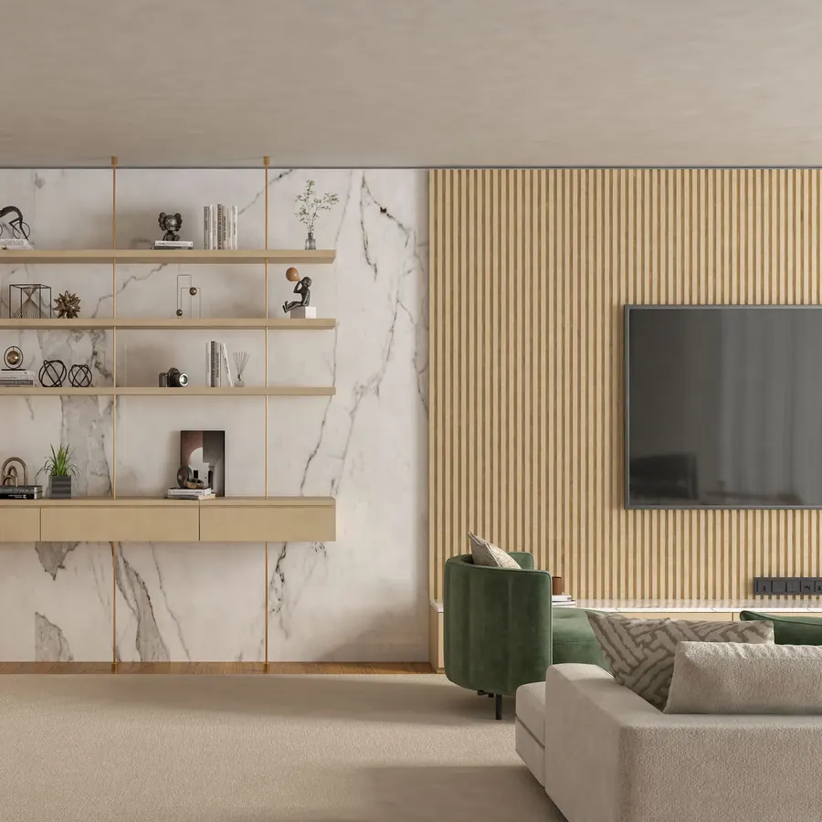

معلم ديكورات مكة | تركيب بديل الرخام وبديل الخشب وفوم استيل بمكه
أحدث تصاميم الديكورات العصرية في مكة المكرمة. تركيب ألواح بديل الرخام اللامعة، تكسيات بديل الخشب WPC والشيبورد، براويز وبانوهات الفوم الأنيقة، شرائح الاستيل الذهبي والفضي، والمرايا الجدارية المشطوفة بإضاءة LED مخفية. تنسيق متكامل لخلفيات الشاشات والمجالس والصالات بأيدي فنيين محترفين مع الضمان.

ديكور خلفية شاشة يدمج بديل الرخام مع بديل الخشب في مكةخدمات الديكورات الداخلية الأكثر طلباً في مكة المكرمة
تركيب بديل الرخام PVC
ألواح رخامية بديلة خفيفة الوزن فائقة اللمعان، مقاومة للحرارة والماء، سهلة التنظيف ومثالية للمجالس والمداخل وخلفيات التلفزيون.
تكسيات بديل الخشب والشيبورد
شرائح خشبية معالجة WPC بألوان دافئة (بني، رمادي، خشبي طبيعي) تمنح المكان فخامة استثنائية وعزلاً صوتياً مريحاً.
بانوهات الفوم الكوري (Moldings)
إطارات وبانوهات جدارية بتصاميم كلاسيكية ونيوكلاسيك، مقاومة للرطوبة والحشرات، يتم دهانها بنفس لون الجدار أو بألوان مميزة.
شرائح الاستيل الذهبي والفضي
فواصل وتطعيمات استيل ستانلس ستيل عيار 304 غير قابل للصدأ، تعطي لمسة عصرية براقة تندمج مع الفوم وبديل الرخام.
المرايا الجدارية المشطوفة والليد
تفصيل وتركيب مرايا جدارية مقطعة ليزر (شطف كمبيوتر) للممرات والصالات بإنارة ليد مخفية تعطي إحساساً باتساع المساحة.
ديكورات خلفيات الشاشات (TV Wall)
تصميم وتفصيل جداريات شاشات التلفزيون المتكاملة مع الأرفف المعلقة وتأسيس فتحات الأسلاك والشواحن بشكل مخفي وأنيق.
صور ديكورات داخلية وبديل رخام وخشب نفذها صالح بمكة
أحياء مكة المكرمة المشمولة بخدمات تركيب الديكورات
ودك تجدد صالتك أو مجلسك بأحدث الديكورات؟
تواصل مع المعلم صالح عبر واتساب، أرسل صورة المكان أو التصميم الذي يعجبك، ونعطيك تقييماً فورياً ومعاينة مجانية بمكة.